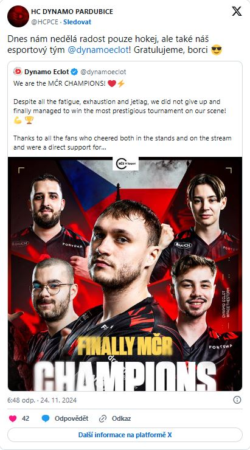
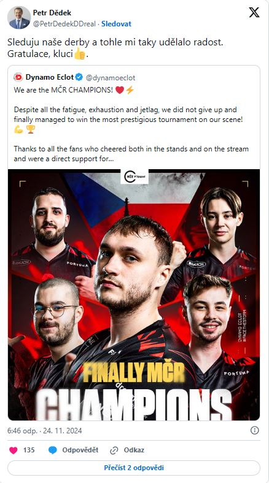
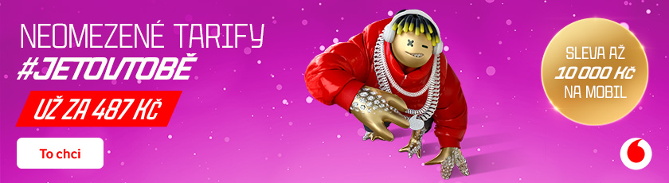

Dynamo Eclot potvrdilo svoji dlouhodobou domácí fazónu ziskem titulu, který mu jako jediný chyběl ve sbírce. Šampion sedmi zastávek a první držitel Tipsport Grand Slamu se stal i českým mistrem. Velký úspěch a zisk 1 milionu korun oslavil také Petr Dědek, který se svou investicí před 3,5 lety trefil do černého. O současném králi českého Counter-Striku nelze pochybovat.
Letos to Dynamu Eclot konečně vyšlo. Před rokem nedokázalo stvrdit dominanci výhrou v nejdůležitějším utkání sezóny, když ve výtečně rozehraném finále ztratili jeho hráči vedení 2:0. Po změnách v týmu a proti několika loňským kolegům ale na letošním finále Tipsport MČR CS podobné zaváhání nedovolilo. Špatnou chvíli si totiž vybralo už na zářijové zastávce Tipsport CS Fall. V Brně je nezastavila ani únava z cestování.
Dynamu Eclot přiletělo do Česka z největšího světového jeviště, stejně jako druhý finalista UNITY. Společně se SINNERS tyto dva celky bojovaly o postup na světový šampionát, DNE se domů vraceli s bilancí 2-3. Jejich cesta na Major skončila ve šlágru proti fnatic, kde po skvělém comebacku nedokázali proměnit tři match pointy. Světovou formu si domácí sestava přenesla z druhého konce světa i na vrchol domácí sezóny.
Finálové střetnutí s UNITY bylo pro Dynamu Eclot jedinou velkou zkouškou. Team Brute na něj v semifinále nestačil rozdílem dvou tříd, DNE nedovolili zaváhání jako před půl rokem v online části jednoho z domácích turnajů a do finále šli se všemi hráči na čele individuálních statistik. Výhodu měli také po týmové stránce, protože spolu hrají celý rok v jednom složení. UNITY především svým map poolem zákonitě zaostávali.
V Brně nastalo završení tříleté cesty. „CZ/SK dokončeno,“ shrnul zkompletování sbírky trenér Pavel „ replay“ Vaněk. Od vstupu miliardáře Petra Dědka do klubu před 3,5 lety dělalo vedení v čele s Martinem Novotným postupné krůčky s naprosto jasnými ambicemi a cíli. „Konečně mistři ČR,“ napsal současný CEO a s reakcí přispěchal i Filip „ K1-FiDa“ Dvořák, původní kapitán DNE, který tentokrát byl na druhé straně barikády.
S blahopřáním na dálku přispěchal také sám pan majitel. „Gratulace, kluci,“ napsal Petr Dědek, který na esportový úspěch nezapomínal ani během hokejového derby Dynama Pardubice proti Hradci Králové. Vzhledem k této kolizi možná neměli pardubičtí v Brně všechny své příznivce, jejich kotel ale bouřil a jako šestý hráč dopomohl k tomu, že Dynamu Eclot na domácím poli Counter-Striku už vyhrálo všechno, co šlo.
 Štítky: Counter-Strike 2, Tipsport CS, MČR, Dynamo Eclot